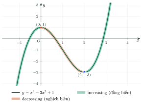
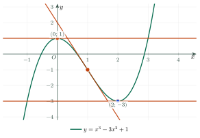

Monotonicity and Extrema of FunctionsTính đơn điệu và cực trị của hàm số
Grade 12 · Topic: Applications of DerivativesLớp 12 · Chủ đề: Ứng dụng đạo hàm
1Lesson IntroductionGiới thiệu bài học
Learning goalsMục tiêu bài học
By the end of this lesson you can:
Sau bài học này, em có thể:
use the derivative to find where a function increases or decreases;
dùng đạo hàm để tìm các khoảng hàm số đồng biến, hàm số nghịch biến;
write a correct sign table and conclusion;
lập bảng xét dấu và kết luận đúng;
solve a simple parameter problem;
giải bài toán tham số đơn giản;
define a local maximum and a local minimum;
định nghĩa điểm cực đại và điểm cực tiểu;
find extrema with the first and second derivative tests;
tìm cực trị bằng hai điều kiện đủ;
explain why \(f'(x_0)=0\) is not enough;
giải thích vì sao \(f'(x_0)=0\) chưa đủ;
state the answer in English.
phát biểu kết quả bằng tiếng Anh.
2Mathematical VocabularyTừ vựng Toán học
increasing function – a function whose values go up as \(x\) goes up.
Hàm số đồng biến – giá trị tăng khi \(x\) tăng.
decreasing function – a function whose values go down as \(x\) goes up.
Hàm số nghịch biến – giá trị giảm khi \(x\) tăng.
monotonicity – whether a function increases or decreases.
Tính đơn điệu – việc hàm số tăng hay giảm.
derivative – the rate of change \(f'(x)\).
Đạo hàm – tốc độ thay đổi \(f'(x)\).
sign table – a table showing where \(f'\) is positive or negative.
Bảng xét dấu – bảng cho biết \(f'\) dương hay âm ở đâu.
parameter – a letter such as \(m\) that stands for a fixed unknown number.
Tham số – chữ như \(m\) đại diện cho một số chưa biết cố định.
discriminant – the number \(\Delta=b^2-4ac\).
Biệt thức – số \(\Delta=b^2-4ac\).
domain – all values of \(x\) for which \(f(x)\) is defined.
Tập xác định – mọi giá trị \(x\) để \(f(x)\) có nghĩa.
extremum (plural: extrema) – a local maximum or a local minimum.
Cực trị – điểm cực đại hoặc cực tiểu.
local maximum – a point where \(f\) is larger than at nearby points.
Cực đại – điểm mà \(f\) lớn hơn ở các điểm lân cận.
local minimum – a point where \(f\) is smaller than at nearby points.
Cực tiểu – điểm mà \(f\) nhỏ hơn ở các điểm lân cận.
critical point – a point where \(f'=0\) or \(f'\) does not exist.
Điểm tới hạn – điểm mà \(f'=0\) hoặc \(f'\) không xác định.
second derivative – the derivative of the derivative, \(f''\).
Đạo hàm cấp hai – đạo hàm của đạo hàm, \(f''\).
variation table – a table of the sign of \(f'\) and the behavior of \(f\).
Bảng biến thiên – bảng ghi dấu \(f'\) và chiều biến thiên của \(f\).
3Useful English PhrasesCụm từ tiếng Anh thường gặp
Find the intervals on which the function is increasing.
Tìm các khoảng mà hàm số đồng biến.
Make a sign table for the derivative.
Lập bảng xét dấu của đạo hàm.
The function is decreasing on the interval \((0,2)\).
Hàm số nghịch biến trên khoảng \((0,2)\).
Find all values of \(m\) such that \(f\) is increasing on \(\mathbb{R}\).
Tìm tất cả giá trị của \(m\) để \(f\) đồng biến trên \(\mathbb{R}\).
Find the local extrema of the function.
Tìm các cực trị của hàm số.
The function has a local maximum at \(x=0\).
Hàm số đạt cực đại tại \(x=0\).
Use the second derivative test.
Dùng điều kiện đủ thứ hai (đạo hàm cấp hai).
The derivative changes sign at this point.
Đạo hàm đổi dấu tại điểm này.
4Prerequisite ReviewÔn tập kiến thức nền
A derivative tells us the slope of the tangent line. Recall these rules:
Đạo hàm cho biết hệ số góc của tiếp tuyến. Nhắc lại các quy tắc:
\((x^n)'=nx^{n-1}\)
\((x^n)'=nx^{n-1}\)
\(\left(\dfrac{u}{v}\right)'=\dfrac{u'v-uv'}{v^2}\)
\(\left(\dfrac{u}{v}\right)'=\dfrac{u'v-uv'}{v^2}\)
The sign of a quadratic \(ax^2+bx+c\) (with \(a>0\)) is positive outside its roots and negative between them.
Dấu của tam thức bậc hai \(ax^2+bx+c\) (với \(a>0\)): dương ngoài hai nghiệm, âm giữa hai nghiệm.
5TheoryLý thuyết
5.1 Increasing and decreasing functionsHàm số đồng biến, nghịch biến
DefinitionĐịnh nghĩa
Let \(K\) be an interval. A function \(f\) is an increasing function on \(K\) if \(x_1\lt x_2\) implies \(f(x_1)\lt f(x_2)\). It is a decreasing function on \(K\) if \(x_1\lt x_2\) implies \(f(x_1)>f(x_2)\), for all \(x_1,x_2\in K\).
Cho \(K\) là một khoảng. Hàm số \(f\) là hàm số đồng biến trên \(K\) nếu \(x_1\lt x_2\) thì \(f(x_1)\lt f(x_2)\); là hàm số nghịch biến trên \(K\) nếu \(x_1\lt x_2\) thì \(f(x_1)>f(x_2)\), với mọi \(x_1,x_2\in K\).
5.2 The derivative test for monotonicityDùng đạo hàm xét tính đơn điệu
TheoremĐịnh lí
Let \(f\) have a derivative on an interval \(K\).
Cho hàm số \(f\) có đạo hàm trên khoảng \(K\).
If \(f'(x)>0\) for all \(x\in K\), then \(f\) is increasing on \(K\).
Nếu \(f'(x)>0\) với mọi \(x\in K\) thì \(f\) đồng biến trên \(K\).
If \(f'(x)\lt 0\) for all \(x\in K\), then \(f\) is decreasing on \(K\).
Nếu \(f'(x)\lt 0\) với mọi \(x\in K\) thì \(f\) nghịch biến trên \(K\).
The statements stay true if \(f'(x)=0\) at only finitely many points of \(K\).
Các kết luận vẫn đúng nếu \(f'(x)=0\) chỉ tại hữu hạn điểm của \(K\).
5.3 MethodCác bước xét tính đơn điệu
Find the domain.
Tìm tập xác định.
Compute \(f'(x)\) and find where \(f'(x)=0\) or \(f'(x)\) does not exist.
Tính \(f'(x)\); tìm các điểm \(f'(x)=0\) hoặc \(f'(x)\) không xác định.
Make a sign table of \(f'\) (a variation table).
Lập bảng xét dấu của \(f'\) (hoặc bảng biến thiên).
Read the intervals where \(f\) increases and decreases.
Đọc các khoảng đồng biến, nghịch biến.

5.1 Local maximum and local minimumCực đại và cực tiểu
DefinitionĐịnh nghĩa
The point \(x_0\) is a local maximum of \(f\) if there is an interval \((a,b)\) containing \(x_0\) such that \(f(x)\lt f(x_0)\) for all \(x\in(a,b)\setminus\{x_0\}\). For a local minimum the inequality is \(f(x)>f(x_0)\). Both are called extrema.
Điểm \(x_0\) là điểm cực đại của \(f\) nếu có khoảng \((a,b)\) chứa \(x_0\) sao cho \(f(x)\lt f(x_0)\) với mọi \(x\in(a,b)\setminus\{x_0\}\). Với điểm cực tiểu thì \(f(x)>f(x_0)\). Cả hai gọi chung là cực trị.
5.2 First derivative testĐiều kiện đủ thứ nhất
TheoremĐịnh lí
Let \(f\) be continuous at \(x_0\) and have a derivative near \(x_0\) (except possibly at \(x_0\)).
Cho \(f\) liên tục tại \(x_0\) và có đạo hàm ở lân cận \(x_0\) (có thể trừ \(x_0\)).
If \(f'\) changes from positive to negative at \(x_0\), then \(x_0\) is a local maximum.
Nếu \(f'\) đổi dấu từ dương sang âm tại \(x_0\) thì \(x_0\) là điểm cực đại.
If \(f'\) changes from negative to positive at \(x_0\), then \(x_0\) is a local minimum.
Nếu \(f'\) đổi dấu từ âm sang dương tại \(x_0\) thì \(x_0\) là điểm cực tiểu.
If \(f'\) does not change sign, there is no extremum at \(x_0\).
Nếu \(f'\) không đổi dấu thì \(x_0\) không là điểm cực trị.
5.3 Second derivative testĐiều kiện đủ thứ hai
TheoremĐịnh lí
Suppose \(f'(x_0)=0\) and \(f''(x_0)\) exists.
Giả sử \(f'(x_0)=0\) và tồn tại \(f''(x_0)\).
If \(f''(x_0)\lt 0\), then \(x_0\) is a local maximum.
Nếu \(f''(x_0)\lt 0\) thì \(x_0\) là điểm cực đại.
If \(f''(x_0)>0\), then \(x_0\) is a local minimum.
Nếu \(f''(x_0)>0\) thì \(x_0\) là điểm cực tiểu.
If \(f''(x_0)=0\), the test fails; use the first derivative test.
Nếu \(f''(x_0)=0\) thì không kết luận được; dùng điều kiện đủ thứ nhất.

6Worked ExamplesVí dụ có lời giải
ExampleVí dụ 1BasicCơ bản – A cubic functionHàm số bậc ba
Find the intervals on which \(f(x)=x^3-3x^2+1\) is increasing or decreasing.
Tìm các khoảng đồng biến, nghịch biến của hàm số \(f(x)=x^3-3x^2+1\).
Analysis: The domain is \(\mathbb{R}\). We need the sign of \(f'\).
Phân tích: Tập xác định là \(\mathbb{R}\). Cần xét dấu của \(f'\).
\(f'(x)=3x^2-6x=3x(x-2)\), and \(f'(x)=0\) at \(x=0\) and \(x=2\).
\(f'(x)=3x^2-6x=3x(x-2)\) và \(f'(x)=0\) tại \(x=0\), \(x=2\).
Sign of \(f'\): positive for \(x\lt 0\), negative for \(0\lt x\lt 2\), positive for \(x>2\).
Dấu của \(f'\): dương khi \(x\lt 0\), âm khi \(0\lt x\lt 2\), dương khi \(x>2\).
So \(f\) is increasing on \((-\infty,0)\) and \((2,+\infty)\), and decreasing on \((0,2)\).
Vậy \(f\) đồng biến trên \((-\infty,0)\) và \((2,+\infty)\), nghịch biến trên \((0,2)\).
ExampleVí dụ 2IntermediateTrung bình – A rational functionHàm phân thức
Study the monotonicity of \(f(x)=\dfrac{2x+1}{x-1}\).
Xét tính đơn điệu của hàm số \(f(x)=\dfrac{2x+1}{x-1}\).
Analysis: The domain is \(\mathbb{R}\setminus\{1\}\), which is not one interval.
Phân tích: Tập xác định là \(\mathbb{R}\setminus\{1\}\), không phải một khoảng duy nhất.
\(f'(x)=\dfrac{2(x-1)-(2x+1)}{(x-1)^2}=\dfrac{-3}{(x-1)^2}\).
\(f'(x)=\dfrac{2(x-1)-(2x+1)}{(x-1)^2}=\dfrac{-3}{(x-1)^2}\).
\(f'(x)\lt 0\) for every \(x\ne1\).
\(f'(x)\lt 0\) với mọi \(x\ne1\).
So \(f\) is decreasing on \((-\infty,1)\) and on \((1,+\infty)\). We must not say it is decreasing on the union.
Vậy \(f\) nghịch biến trên \((-\infty,1)\) và trên \((1,+\infty)\). Không được nói nghịch biến trên hợp của hai khoảng.
ExampleVí dụ 3IntermediateTrung bình – A sum with a fractionTổng có phân thức
Study the monotonicity of \(f(x)=x+\dfrac{4}{x}\).
Xét tính đơn điệu của hàm số \(f(x)=x+\dfrac{4}{x}\).
Analysis: The domain is \(x\ne0\). Write \(f'\) as one fraction.
Phân tích: Tập xác định \(x\ne0\). Viết \(f'\) thành một phân thức.
\(f'(x)=1-\dfrac{4}{x^2}=\dfrac{x^2-4}{x^2}\). It is zero at \(x=\pm2\).
\(f'(x)=1-\dfrac{4}{x^2}=\dfrac{x^2-4}{x^2}\). Nó bằng 0 tại \(x=\pm2\).
\(f'>0\) for \(x\lt -2\) and \(x>2\); \(f'\lt 0\) for \(-2\lt x\lt 0\) and \(0\lt x\lt 2\).
\(f'>0\) khi \(x\lt -2\) và \(x>2\); \(f'\lt 0\) khi \(-2\lt x\lt 0\) và \(0\lt x\lt 2\).
So \(f\) is increasing on \((-\infty,-2)\) and \((2,+\infty)\); decreasing on \((-2,0)\) and \((0,2)\).
Vậy \(f\) đồng biến trên \((-\infty,-2)\) và \((2,+\infty)\); nghịch biến trên \((-2,0)\) và \((0,2)\).
ExampleVí dụ 4AdvancedNâng cao – A parameterBài toán tham số
Find all values of the parameter \(m\) such that \(f(x)=x^3+3x^2+mx+1\) is increasing on \(\mathbb{R}\).
Tìm tất cả các giá trị của tham số \(m\) để hàm số \(f(x)=x^3+3x^2+mx+1\) đồng biến trên \(\mathbb{R}\).
Analysis: We need \(f'(x)\ge0\) for all \(x\). A quadratic with \(a>0\) is never negative when its discriminant is at most 0.
Phân tích: Cần \(f'(x)\ge0\) với mọi \(x\). Tam thức có \(a>0\) không âm với mọi \(x\) khi biệt thức không dương.
\(f'(x)=3x^2+6x+m\), with \(a=3>0\).
\(f'(x)=3x^2+6x+m\), có \(a=3>0\).
\(\Delta'=9-3m\le0\) gives \(m\ge3\).
\(\Delta'=9-3m\le0\) cho \(m\ge3\).
For \(m=3\), \(f'(x)=3(x+1)^2\) is zero only at \(x=-1\), so \(f\) is still increasing.
Với \(m=3\), \(f'(x)=3(x+1)^2\) chỉ bằng 0 tại \(x=-1\) nên \(f\) vẫn đồng biến.
ExampleVí dụ 5BasicCơ bản – Sign change of the derivativeĐổi dấu của đạo hàm
Find the extrema of \(f(x)=x^3-3x^2+1\).
Tìm cực trị của hàm số \(f(x)=x^3-3x^2+1\).
Analysis: Find the roots of \(f'\), then check the sign change.
Phân tích: Tìm nghiệm của \(f'\), rồi xét đổi dấu.
\(f'(x)=3x(x-2)\), zero at \(x=0\) and \(x=2\).
\(f'(x)=3x(x-2)\), bằng 0 tại \(x=0\) và \(x=2\).
\(f'\) changes from \(+\) to \(-\) at \(x=0\): local maximum, \(f(0)=1\).
\(f'\) đổi dấu từ \(+\) sang \(-\) tại \(x=0\): cực đại, \(f(0)=1\).
\(f'\) changes from \(-\) to \(+\) at \(x=2\): local minimum, \(f(2)=8-12+1=-3\).
\(f'\) đổi dấu từ \(-\) sang \(+\) tại \(x=2\): cực tiểu, \(f(2)=8-12+1=-3\).
ExampleVí dụ 6IntermediateTrung bình – The second derivative testDùng đạo hàm cấp hai
Find the extrema of \(f(x)=x^4-2x^2+3\).
Tìm cực trị của hàm số \(f(x)=x^4-2x^2+3\).
Analysis: Find \(f'\) and \(f''\), then test each critical point.
Phân tích: Tính \(f'\) và \(f''\), rồi xét từng điểm tới hạn.
\(f'(x)=4x(x^2-1)\), zero at \(x=-1,\ 0,\ 1\). Also \(f''(x)=12x^2-4\).
\(f'(x)=4x(x^2-1)\), bằng 0 tại \(x=-1,\ 0,\ 1\). Và \(f''(x)=12x^2-4\).
\(f''(0)=-4\lt 0\): local maximum, \(f(0)=3\).
\(f''(0)=-4\lt 0\): cực đại, \(f(0)=3\).
\(f''(\pm1)=8>0\): local minima, \(f(\pm1)=2\).
\(f''(\pm1)=8>0\): cực tiểu, \(f(\pm1)=2\).
ExampleVí dụ 7IntermediateTrung bình – Zero derivative, no extremumĐạo hàm bằng 0 nhưng không có cực trị
Does \(f(x)=x^3\) have an extremum at \(x=0\)?
Hàm số \(f(x)=x^3\) có cực trị tại \(x=0\) không?
Analysis: Check the sign of \(f'\) on both sides of 0.
Phân tích: Xét dấu của \(f'\) ở hai phía của 0.
\(f'(x)=3x^2\), so \(f'(0)=0\).
\(f'(x)=3x^2\) nên \(f'(0)=0\).
But \(f'(x)>0\) for \(x\lt 0\) and for \(x>0\). It does not change sign.
Nhưng \(f'(x)>0\) khi \(x\lt 0\) và khi \(x>0\). Nó không đổi dấu.
So there is no extremum. \(f'(x_0)=0\) is necessary, not sufficient.
Vậy không có cực trị. Điều kiện \(f'(x_0)=0\) là cần, chưa đủ.
ExampleVí dụ 8AdvancedNâng cao – A parameterBài toán tham số
Find all values of \(m\) such that \(f(x)=x^3-3x^2+mx\) has two extreme points.
Tìm tất cả giá trị của \(m\) để hàm số \(f(x)=x^3-3x^2+mx\) có hai điểm cực trị.
Analysis: Two extreme points need \(f'\) to have two different roots and to change sign at them.
Phân tích: Có hai điểm cực trị khi \(f'\) có hai nghiệm phân biệt và đổi dấu tại đó.
\(f'(x)=3x^2-6x+m\) is a quadratic.
\(f'(x)=3x^2-6x+m\) là tam thức bậc hai.
Two distinct roots: \(\Delta'=9-3m>0\), so \(m\lt 3\).
Hai nghiệm phân biệt: \(\Delta'=9-3m>0\) nên \(m\lt 3\).
7PracticeBài tập luyện tập
A. Multiple Choice – monotonicityA. Trắc nghiệm nhiều lựa chọn – tính đơn điệu
On which interval is \(f(x)=-x^2+4x\) increasing?
Hàm số \(f(x)=-x^2+4x\) đồng biến trên khoảng nào?
Answer: a. \(f'(x)=-2x+4>0\) when \(x\lt 2\).
Đáp án a. \(f'(x)=-2x+4>0\) khi \(x\lt 2\).
On which interval is \(f(x)=x^3-3x\) decreasing?
Hàm số \(f(x)=x^3-3x\) nghịch biến trên khoảng nào?
Answer: b. \(f'(x)=3x^2-3\lt 0\) exactly when \(-1\lt x\lt 1\).
Đáp án b. \(f'(x)=3x^2-3\lt 0\) đúng khi \(-1\lt x\lt 1\).
Let \(f(x)=\dfrac{x-2}{x+1}\). On which interval is \(f\) increasing?
Cho \(f(x)=\dfrac{x-2}{x+1}\). Hàm số đồng biến trên khoảng nào?
Answer: b. \(f'(x)=\dfrac{3}{(x+1)^2}>0\) for \(x\ne-1\), but an interval must not contain \(-1\). Only \((-1,2)\) qualifies.
Đáp án b. \(f'(x)=\dfrac{3}{(x+1)^2}>0\) với \(x\ne-1\), nhưng khoảng không được chứa \(-1\). Chỉ có \((-1,2)\) thỏa mãn.
Let \(f'(x)=(x-1)(x+2)^2\). On which interval is \(f\) increasing?
Cho \(f'(x)=(x-1)(x+2)^2\). Hàm số đồng biến trên khoảng nào?
Answer: b. \((x+2)^2\ge0\), so \(f'>0\) exactly when \(x>1\).
Đáp án b. \((x+2)^2\ge0\) nên \(f'>0\) đúng khi \(x>1\).
B. True or False – monotonicityB. Đúng hoặc sai – tính đơn điệu
True or false: if \(f'(x)>0\) on \((a,b)\), then \(f\) is increasing on \((a,b)\).
Đúng hay sai: nếu \(f'(x)>0\) trên \((a,b)\) thì \(f\) đồng biến trên \((a,b)\).
True. This is the derivative test.
Đúng. Đây là định lí về dấu của đạo hàm.
True or false: \(f(x)=\dfrac1x\) is decreasing on its whole domain \(\mathbb{R}\setminus\{0\}\).
Đúng hay sai: \(f(x)=\dfrac1x\) nghịch biến trên toàn bộ tập xác định \(\mathbb{R}\setminus\{0\}\).
False. It is decreasing on \((-\infty,0)\) and on \((0,+\infty)\) separately. But \(-1\lt 1\) while \(f(-1)=-1\lt f(1)=1\).
Sai. Hàm số nghịch biến trên từng khoảng \((-\infty,0)\) và \((0,+\infty)\). Nhưng \(-1\lt 1\) mà \(f(-1)=-1\lt f(1)=1\).
C. Short Answer – monotonicityC. Trả lời ngắn – tính đơn điệu
Write the interval on which \(f(x)=x^2-6x+5\) is decreasing.
Viết khoảng mà hàm số \(f(x)=x^2-6x+5\) nghịch biến.
Format: (-inf,3). You may type inf for infinity.
Định dạng: (-inf,3). Có thể gõ inf cho vô cực.
Answer: \((-\infty,3)\). \(f'(x)=2x-6\lt 0\) when \(x\lt 3\).
Đáp án: \((-\infty,3)\). \(f'(x)=2x-6\lt 0\) khi \(x\lt 3\).
How many solutions does \(f'(x)=0\) have for \(f(x)=x^4-2x^2\)?
Với \(f(x)=x^4-2x^2\), phương trình \(f'(x)=0\) có bao nhiêu nghiệm?
Enter a whole number.
Nhập một số nguyên.
Answer: 3. \(f'(x)=4x^3-4x=4x(x-1)(x+1)\).
Đáp án: 3. \(f'(x)=4x^3-4x=4x(x-1)(x+1)\).
Find the smallest integer \(m\) such that \(f(x)=x^3+3x^2+mx\) is increasing on \(\mathbb{R}\).
Tìm số nguyên \(m\) nhỏ nhất để \(f(x)=x^3+3x^2+mx\) đồng biến trên \(\mathbb{R}\).
Enter a whole number.
Nhập một số nguyên.
Answer: 3. We need \(9-3m\le0\), so \(m\ge3\).
Đáp án: 3. Cần \(9-3m\le0\) nên \(m\ge3\).
Find the smallest integer \(m\) such that \(f(x)=\dfrac{mx+1}{x-1}\) is decreasing on each interval of its domain.
Tìm số nguyên \(m\) nhỏ nhất để \(f(x)=\dfrac{mx+1}{x-1}\) nghịch biến trên từng khoảng xác định.
Enter a whole number.
Nhập một số nguyên.
Answer: 0. \(f'(x)=\dfrac{-m-1}{(x-1)^2}\lt 0\) exactly when \(m>-1\), so the smallest integer is 0.
Đáp án: 0. \(f'(x)=\dfrac{-m-1}{(x-1)^2}\lt 0\) đúng khi \(m>-1\), nên số nguyên nhỏ nhất là 0.
D. Multiple Choice – extremaD. Trắc nghiệm nhiều lựa chọn – cực trị
At which \(x\) does \(f(x)=x^2-4x+1\) have a local minimum?
Hàm số \(f(x)=x^2-4x+1\) đạt cực tiểu tại \(x\) bằng bao nhiêu?
Answer: b. \(f'(x)=2x-4=0\) at \(x=2\) and \(f''=2>0\).
Đáp án b. \(f'(x)=2x-4=0\) tại \(x=2\) và \(f''=2>0\).
At which \(x\) does \(f(x)=-x^3+3x\) have a local maximum?
Hàm số \(f(x)=-x^3+3x\) đạt cực đại tại \(x\) bằng bao nhiêu?
Answer: c. \(f'(x)=-3x^2+3=0\) at \(x=\pm1\), and \(f''(1)=-6\lt 0\).
Đáp án c. \(f'(x)=-3x^2+3=0\) tại \(x=\pm1\), và \(f''(1)=-6\lt 0\).
Let \(f'(x)=x(x-1)^2(x+2)\). How many extreme points does \(f\) have?
Cho \(f'(x)=x(x-1)^2(x+2)\). Hàm số \(f\) có bao nhiêu điểm cực trị?
Answer: b. \(f'\) changes sign at \(x=0\) and \(x=-2\), but not at \(x=1\) because \((x-1)^2\ge0\).
Đáp án b. \(f'\) đổi dấu tại \(x=0\) và \(x=-2\), nhưng không đổi dấu tại \(x=1\) vì \((x-1)^2\ge0\).
E. True or False – extremaE. Đúng hoặc sai – cực trị
True or false: if \(f'(x_0)=0\), then \(x_0\) is an extreme point.
Đúng hay sai: nếu \(f'(x_0)=0\) thì \(x_0\) là điểm cực trị.
False. For \(f(x)=x^3\), \(f'(0)=0\) but there is no extremum.
Sai. Với \(f(x)=x^3\), \(f'(0)=0\) nhưng không có cực trị.
True or false: \(f(x)=|x|\) has a local minimum at \(x=0\), although \(f'(0)\) does not exist.
Đúng hay sai: \(f(x)=|x|\) đạt cực tiểu tại \(x=0\) dù không tồn tại \(f'(0)\).
True. \(f(x)\ge0=f(0)\) near 0, and \(f'\) changes from \(-1\) to \(1\).
Đúng. \(f(x)\ge0=f(0)\) gần 0, và \(f'\) đổi từ \(-1\) sang \(1\).
True or false: \(f(x)=x^4\) has a local minimum at \(x=0\) even though \(f''(0)=0\).
Đúng hay sai: \(f(x)=x^4\) đạt cực tiểu tại \(x=0\) dù \(f''(0)=0\).
True. \(f'(x)=4x^3\) changes from negative to positive at 0. The second derivative test simply fails here.
Đúng. \(f'(x)=4x^3\) đổi dấu từ âm sang dương tại 0. Điều kiện đủ thứ hai không kết luận được ở đây.
F. Short Answer – extremaF. Trả lời ngắn – cực trị
Find the local minimum value of \(f(x)=x^3-3x\).
Tìm giá trị cực tiểu của hàm số \(f(x)=x^3-3x\).
Enter a number.
Nhập một số.
Answer: \(-2\). The local minimum is at \(x=1\): \(f(1)=1-3=-2\).
Đáp án: \(-2\). Cực tiểu tại \(x=1\): \(f(1)=1-3=-2\).
How many extreme points does \(f(x)=x^4-2x^2\) have?
Hàm số \(f(x)=x^4-2x^2\) có bao nhiêu điểm cực trị?
Enter a whole number.
Nhập một số nguyên.
Answer: 3 (two minima and one maximum).
Đáp án: 3 (hai cực tiểu và một cực đại).
Find the largest integer \(m\) such that \(f(x)=x^3-3x^2+mx\) has two extreme points.
Tìm số nguyên \(m\) lớn nhất để \(f(x)=x^3-3x^2+mx\) có hai điểm cực trị.
Enter a whole number.
Nhập một số nguyên.
Answer: 2. We need \(m\lt 3\).
Đáp án: 2. Cần \(m\lt 3\).
Find the local minimum value of \(f(x)=x+\dfrac4x\) for \(x>0\).
Tìm giá trị cực tiểu của \(f(x)=x+\dfrac4x\) với \(x>0\).
Enter a number.
Nhập một số.
Answer: 4. \(f'(x)=1-\dfrac4{x^2}=0\) at \(x=2\), \(f''(2)=1>0\), and \(f(2)=2+2=4\).
Đáp án: 4. \(f'(x)=1-\dfrac4{x^2}=0\) tại \(x=2\), \(f''(2)=1>0\) và \(f(2)=2+2=4\).
G. Self-practice: Multiple ChoiceG. Tự luyện: trắc nghiệm
On which interval is \(f(x)=x^3-6x^2+9x\) decreasing?
Hàm số \(f(x)=x^3-6x^2+9x\) nghịch biến trên khoảng nào?
Answer: c. \(f'(x)=3(x-1)(x-3)\lt 0\) exactly when \(1\lt x\lt 3\).
Đáp án c. \(f'(x)=3(x-1)(x-3)\lt 0\) đúng khi \(1\lt x\lt 3\).
Let \(f'(x)=(x+1)x^2(x-4)^3\). How many extreme points does \(f\) have?
Cho \(f'(x)=(x+1)x^2(x-4)^3\). Hàm số \(f\) có bao nhiêu điểm cực trị?
Answer: c. \(f'\) changes sign only at roots of odd multiplicity: there are 2 of them.
Đáp án c. \(f'\) chỉ đổi dấu tại các nghiệm bội lẻ: có 2 nghiệm như vậy.
Find the local maximum value of \(f(x)=x^3-27x\).
Tìm giá trị cực đại của hàm số \(f(x)=x^3-27x\).
Answer: a. \(f'(x)=3x^2-27=0\) at \(x=\pm3\). At \(x=-3\): \(f(-3)=54\).
Đáp án a. \(f'(x)=3x^2-27=0\) tại \(x=\pm3\). Tại \(x=-3\): \(f(-3)=54\).
Find the smallest integer \(m\) such that \(f(x)=x^3+5x^2+mx\) is increasing on \(\mathbb{R}\).
Tìm số nguyên \(m\) nhỏ nhất để \(f(x)=x^3+5x^2+mx\) đồng biến trên \(\mathbb{R}\).
Answer: a. \(f'(x)=3x^2+10x+m\ge0\) for all \(x\) needs \(\Delta'=25-3m\le0\), so \(m\ge\dfrac{25}{3}\). The smallest integer is 9.
Đáp án a. \(f'(x)=3x^2+10x+m\ge0\) với mọi \(x\) cần \(\Delta'=25-3m\le0\), nên \(m\ge\dfrac{25}{3}\). Số nguyên nhỏ nhất là 9.
Let \(f'(x)=-2(x+1)(x-3)\). On which interval is \(f\) increasing?
Cho \(f'(x)=-2(x+1)(x-3)\). Hàm số \(f\) đồng biến trên khoảng nào?
Answer: d. The leading coefficient of \(f'\) is negative, so \(f'\gt 0\) only between the roots: \(f\) is increasing on \((-1,3)\).
Đáp án d. Hệ số cao nhất của \(f'\) âm nên \(f'\gt 0\) chỉ giữa hai nghiệm: \(f\) đồng biến trên \((-1,3)\).
Find the minimum value of \(f(x)=4x+\dfrac{36}{x}\) for \(x\gt 0\).
Tìm giá trị nhỏ nhất của \(f(x)=4x+\dfrac{36}{x}\) với \(x\gt 0\).
Answer: b. \(f'(x)=4-\dfrac{36}{x^2}=0\) at \(x=3\), and \(f(3)=24\).
Đáp án b. \(f'(x)=4-\dfrac{36}{x^2}=0\) tại \(x=3\) và \(f(3)=24\).
On which interval is \(f(x)=x^3-6x^2\) decreasing?
Hàm số \(f(x)=x^3-6x^2\) nghịch biến trên khoảng nào?
Answer: d. \(f'(x)=3(x+0)(x-4)\lt 0\) exactly when \(0\lt x\lt 4\).
Đáp án d. \(f'(x)=3(x+0)(x-4)\lt 0\) đúng khi \(0\lt x\lt 4\).
Find the local minimum value of \(f(x)=x^3-27x\).
Tìm giá trị cực tiểu của hàm số \(f(x)=x^3-27x\).
Answer: c. \(f'(x)=3x^2-27=0\) at \(x=\pm3\). At \(x=3\): \(f(3)=-54\).
Đáp án c. \(f'(x)=3x^2-27=0\) tại \(x=\pm3\). Tại \(x=3\): \(f(3)=-54\).
A. Multiple Choice – monotonicityA. Trắc nghiệm nhiều lựa chọn – tính đơn điệu
On which interval is \(f(x)=-x^2+6x\) increasing?
Hàm số \(f(x)=-x^2+6x\) đồng biến trên khoảng nào?
Answer: c. \(f'(x)=-2x+6>0\) when \(x\lt 3\).
Đáp án c. \(f'(x)=-2x+6>0\) khi \(x\lt 3\).
On which interval is \(f(x)=x^3-12x\) decreasing?
Hàm số \(f(x)=x^3-12x\) nghịch biến trên khoảng nào?
Answer: a. \(f'(x)=3x^2-12\lt 0\) exactly when \(-2\lt x\lt 2\).
Đáp án a. \(f'(x)=3x^2-12\lt 0\) đúng khi \(-2\lt x\lt 2\).
Let \(f(x)=\dfrac{x-3}{x+2}\). On which interval is \(f\) increasing?
Cho \(f(x)=\dfrac{x-3}{x+2}\). Hàm số đồng biến trên khoảng nào?
Answer: d. \(f'(x)=\dfrac{5}{(x+2)^2}>0\) for \(x\ne-2\), but an interval must not contain \(-2\). Only \((-2,3)\) qualifies.
Đáp án d. \(f'(x)=\dfrac{5}{(x+2)^2}>0\) với \(x\ne-2\), nhưng khoảng không được chứa \(-2\). Chỉ có \((-2,3)\) thỏa mãn.
Let \(f'(x)=(x-2)(x+1)^2\). On which interval is \(f\) increasing?
Cho \(f'(x)=(x-2)(x+1)^2\). Hàm số đồng biến trên khoảng nào?
Answer: b. \((x+1)^2\ge0\), so \(f'>0\) exactly when \(x>2\).
Đáp án b. \((x+1)^2\ge0\) nên \(f'>0\) đúng khi \(x>2\).
B. True or False – monotonicityB. Đúng hoặc sai – tính đơn điệu
True or false: if \(f'(x)\lt 0\) on \((a,b)\), then \(f\) is decreasing on \((a,b)\).
Đúng hay sai: nếu \(f'(x)\lt 0\) trên \((a,b)\) thì \(f\) nghịch biến trên \((a,b)\).
True. This is the derivative test.
Đúng. Đây là định lí về dấu của đạo hàm.
True or false: \(f(x)=-\dfrac1x\) is increasing on its whole domain \(\mathbb{R}\setminus\{0\}\).
Đúng hay sai: \(f(x)=-\dfrac1x\) đồng biến trên toàn bộ tập xác định \(\mathbb{R}\setminus\{0\}\).
False. It is increasing on \((-\infty,0)\) and on \((0,+\infty)\) separately. But \(-1\lt 1\) while \(f(-1)=1>f(1)=-1\).
Sai. Hàm số đồng biến trên từng khoảng \((-\infty,0)\) và \((0,+\infty)\). Nhưng \(-1\lt 1\) mà \(f(-1)=1>f(1)=-1\).
C. Short Answer – monotonicityC. Trả lời ngắn – tính đơn điệu
Write the interval on which \(f(x)=x^2-8x+3\) is decreasing.
Viết khoảng mà hàm số \(f(x)=x^2-8x+3\) nghịch biến.
Format: (-inf,3). You may type inf for infinity.
Định dạng: (-inf,3). Có thể gõ inf cho vô cực.
Answer: \((-\infty,4)\). \(f'(x)=2x-8\lt 0\) when \(x\lt 4\).
Đáp án: \((-\infty,4)\). \(f'(x)=2x-8\lt 0\) khi \(x\lt 4\).
How many solutions does \(f'(x)=0\) have for \(f(x)=x^3-3x^2\)?
Với \(f(x)=x^3-3x^2\), phương trình \(f'(x)=0\) có bao nhiêu nghiệm?
Enter a whole number.
Nhập một số nguyên.
Answer: 2. \(f'(x)=3x^2-6x=3x(x-2)\), so \(x=0\) or \(x=2\).
Đáp án: 2. \(f'(x)=3x^2-6x=3x(x-2)\) nên \(x=0\) hoặc \(x=2\).
Find the smallest integer \(m\) such that \(f(x)=x^3+6x^2+mx\) is increasing on \(\mathbb{R}\).
Tìm số nguyên \(m\) nhỏ nhất để \(f(x)=x^3+6x^2+mx\) đồng biến trên \(\mathbb{R}\).
Enter a whole number.
Nhập một số nguyên.
Answer: 12. \(f'(x)=3x^2+12x+m\). We need \(\Delta'=36-3m\le0\), so \(m\ge12\).
Đáp án: 12. \(f'(x)=3x^2+12x+m\). Cần \(\Delta'=36-3m\le0\) nên \(m\ge12\).
Find the smallest integer \(m\) such that \(f(x)=\dfrac{mx+4}{x+2}\) is increasing on each interval of its domain.
Tìm số nguyên \(m\) nhỏ nhất để \(f(x)=\dfrac{mx+4}{x+2}\) đồng biến trên từng khoảng xác định.
Enter a whole number.
Nhập một số nguyên.
Answer: 3. \(f'(x)=\dfrac{2m-4}{(x+2)^2}>0\) exactly when \(m>2\), so the smallest integer is 3.
Đáp án: 3. \(f'(x)=\dfrac{2m-4}{(x+2)^2}>0\) đúng khi \(m>2\), nên số nguyên nhỏ nhất là 3.
D. Multiple Choice – extremaD. Trắc nghiệm nhiều lựa chọn – cực trị
At which \(x\) does \(f(x)=x^2-6x+2\) have a local minimum?
Hàm số \(f(x)=x^2-6x+2\) đạt cực tiểu tại \(x\) bằng bao nhiêu?
Answer: d. \(f'(x)=2x-6=0\) at \(x=3\) and \(f''=2>0\).
Đáp án d. \(f'(x)=2x-6=0\) tại \(x=3\) và \(f''=2>0\).
At which \(x\) does \(f(x)=-x^3+12x\) have a local maximum?
Hàm số \(f(x)=-x^3+12x\) đạt cực đại tại \(x\) bằng bao nhiêu?
Answer: a. \(f'(x)=-3x^2+12=0\) at \(x=\pm2\), and \(f''(2)=-12\lt 0\).
Đáp án a. \(f'(x)=-3x^2+12=0\) tại \(x=\pm2\), và \(f''(2)=-12\lt 0\).
Let \(f'(x)=x^2(x-1)(x+2)(x-3)\). How many extreme points does \(f\) have?
Cho \(f'(x)=x^2(x-1)(x+2)(x-3)\). Hàm số \(f\) có bao nhiêu điểm cực trị?
Answer: c. \(f'\) changes sign at \(x=1\), \(x=-2\) and \(x=3\), but not at \(x=0\) because \(x^2\ge0\).
Đáp án c. \(f'\) đổi dấu tại \(x=1\), \(x=-2\) và \(x=3\), nhưng không đổi dấu tại \(x=0\) vì \(x^2\ge0\).
E. True or False – extremaE. Đúng hoặc sai – cực trị
True or false: if \(f'(x_0)=0\) and \(f''(x_0)=0\), then \(x_0\) is never an extreme point.
Đúng hay sai: nếu \(f'(x_0)=0\) và \(f''(x_0)=0\) thì \(x_0\) không bao giờ là điểm cực trị.
False. For \(f(x)=x^4\), \(f'(0)=f''(0)=0\) but \(x=0\) is a local minimum.
Sai. Với \(f(x)=x^4\), \(f'(0)=f''(0)=0\) nhưng \(x=0\) là điểm cực tiểu.
True or false: \(f(x)=|x-1|\) has a local minimum at \(x=1\), although \(f'(1)\) does not exist.
Đúng hay sai: \(f(x)=|x-1|\) đạt cực tiểu tại \(x=1\) dù không tồn tại \(f'(1)\).
True. \(f(x)\ge0=f(1)\) near 1, and \(f'\) changes from \(-1\) to \(1\).
Đúng. \(f(x)\ge0=f(1)\) gần 1, và \(f'\) đổi từ \(-1\) sang \(1\).
True or false: \(f(x)=-x^4\) has a local maximum at \(x=0\) even though \(f''(0)=0\).
Đúng hay sai: \(f(x)=-x^4\) đạt cực đại tại \(x=0\) dù \(f''(0)=0\).
True. \(f'(x)=-4x^3\) changes from positive to negative at 0. The second derivative test simply fails here.
Đúng. \(f'(x)=-4x^3\) đổi dấu từ dương sang âm tại 0. Điều kiện đủ thứ hai không kết luận được ở đây.
F. Short Answer – extremaF. Trả lời ngắn – cực trị
Find the local minimum value of \(f(x)=x^3-12x\).
Tìm giá trị cực tiểu của hàm số \(f(x)=x^3-12x\).
Enter a number.
Nhập một số.
Answer: \(-16\). The local minimum is at \(x=2\): \(f(2)=8-24=-16\).
Đáp án: \(-16\). Cực tiểu tại \(x=2\): \(f(2)=8-24=-16\).
How many extreme points does \(f(x)=x^4+4x^2\) have?
Hàm số \(f(x)=x^4+4x^2\) có bao nhiêu điểm cực trị?
Enter a whole number.
Nhập một số nguyên.
Answer: 1. \(f'(x)=4x^3+8x=4x(x^2+2)\) is zero only at \(x=0\), and \(f'\) changes from negative to positive there.
Đáp án: 1. \(f'(x)=4x^3+8x=4x(x^2+2)\) chỉ bằng 0 tại \(x=0\), và \(f'\) đổi dấu từ âm sang dương tại đó.
Find the largest integer \(m\) such that \(f(x)=x^3-6x^2+mx\) has two extreme points.
Tìm số nguyên \(m\) lớn nhất để \(f(x)=x^3-6x^2+mx\) có hai điểm cực trị.
Enter a whole number.
Nhập một số nguyên.
Answer: 11. \(f'(x)=3x^2-12x+m\). We need \(\Delta'=36-3m>0\), so \(m\lt 12\).
Đáp án: 11. \(f'(x)=3x^2-12x+m\). Cần \(\Delta'=36-3m>0\) nên \(m\lt 12\).
Find the local minimum value of \(f(x)=2x+\dfrac8x\) for \(x>0\).
Tìm giá trị cực tiểu của \(f(x)=2x+\dfrac8x\) với \(x>0\).
Enter a number.
Nhập một số.
Answer: 8. \(f'(x)=2-\dfrac8{x^2}=0\) at \(x=2\), \(f''(2)=2>0\), and \(f(2)=4+4=8\).
Đáp án: 8. \(f'(x)=2-\dfrac8{x^2}=0\) tại \(x=2\), \(f''(2)=2>0\) và \(f(2)=4+4=8\).
G. Self-practice: Multiple ChoiceG. Tự luyện: trắc nghiệm
On which interval is \(f(x)=x^3-12x^2+45x\) decreasing?
Hàm số \(f(x)=x^3-12x^2+45x\) nghịch biến trên khoảng nào?
Answer: c. \(f'(x)=3(x-3)(x-5)\lt 0\) exactly when \(3\lt x\lt 5\).
Đáp án c. \(f'(x)=3(x-3)(x-5)\lt 0\) đúng khi \(3\lt x\lt 5\).
Let \(f'(x)=(x+4)^3(x+1)(x-2)^2\). How many extreme points does \(f\) have?
Cho \(f'(x)=(x+4)^3(x+1)(x-2)^2\). Hàm số \(f\) có bao nhiêu điểm cực trị?
Answer: a. \(f'\) changes sign only at roots of odd multiplicity: there are 2 of them.
Đáp án a. \(f'\) chỉ đổi dấu tại các nghiệm bội lẻ: có 2 nghiệm như vậy.
Find the local minimum value of \(f(x)=x^3-48x\).
Tìm giá trị cực tiểu của hàm số \(f(x)=x^3-48x\).
Answer: b. \(f'(x)=3x^2-48=0\) at \(x=\pm4\). At \(x=4\): \(f(4)=-128\).
Đáp án b. \(f'(x)=3x^2-48=0\) tại \(x=\pm4\). Tại \(x=4\): \(f(4)=-128\).
Find the smallest integer \(m\) such that \(f(x)=x^3+8x^2+mx\) is increasing on \(\mathbb{R}\).
Tìm số nguyên \(m\) nhỏ nhất để \(f(x)=x^3+8x^2+mx\) đồng biến trên \(\mathbb{R}\).
Answer: c. \(f'(x)=3x^2+16x+m\ge0\) for all \(x\) needs \(\Delta'=64-3m\le0\), so \(m\ge\dfrac{64}{3}\). The smallest integer is 22.
Đáp án c. \(f'(x)=3x^2+16x+m\ge0\) với mọi \(x\) cần \(\Delta'=64-3m\le0\), nên \(m\ge\dfrac{64}{3}\). Số nguyên nhỏ nhất là 22.
Let \(f'(x)=-(x+1)(x-2)\). On which interval is \(f\) increasing?
Cho \(f'(x)=-(x+1)(x-2)\). Hàm số \(f\) đồng biến trên khoảng nào?
Answer: d. The leading coefficient of \(f'\) is negative, so \(f'\gt 0\) only between the roots: \(f\) is increasing on \((-1,2)\).
Đáp án d. Hệ số cao nhất của \(f'\) âm nên \(f'\gt 0\) chỉ giữa hai nghiệm: \(f\) đồng biến trên \((-1,2)\).
Find the minimum value of \(f(x)=3x+\dfrac{27}{x}\) for \(x\gt 0\).
Tìm giá trị nhỏ nhất của \(f(x)=3x+\dfrac{27}{x}\) với \(x\gt 0\).
Answer: a. \(f'(x)=3-\dfrac{27}{x^2}=0\) at \(x=3\), and \(f(3)=18\).
Đáp án a. \(f'(x)=3-\dfrac{27}{x^2}=0\) tại \(x=3\) và \(f(3)=18\).
On which interval is \(f(x)=x^3-3x^2-9x\) decreasing?
Hàm số \(f(x)=x^3-3x^2-9x\) nghịch biến trên khoảng nào?
Answer: a. \(f'(x)=3(x+1)(x-3)\lt 0\) exactly when \(-1\lt x\lt 3\).
Đáp án a. \(f'(x)=3(x+1)(x-3)\lt 0\) đúng khi \(-1\lt x\lt 3\).
Find the local maximum value of \(f(x)=x^3-3x\).
Tìm giá trị cực đại của hàm số \(f(x)=x^3-3x\).
Answer: c. \(f'(x)=3x^2-3=0\) at \(x=\pm1\). At \(x=-1\): \(f(-1)=2\).
Đáp án c. \(f'(x)=3x^2-3=0\) tại \(x=\pm1\). Tại \(x=-1\): \(f(-1)=2\).
A. Multiple Choice – monotonicityA. Trắc nghiệm nhiều lựa chọn – tính đơn điệu
On which interval is \(f(x)=-x^2-4x\) increasing?
Hàm số \(f(x)=-x^2-4x\) đồng biến trên khoảng nào?
Answer: d. \(f'(x)=-2x-4>0\) when \(x\lt -2\).
Đáp án d. \(f'(x)=-2x-4>0\) khi \(x\lt -2\).
On which interval is \(f(x)=x^3-3x^2\) decreasing?
Hàm số \(f(x)=x^3-3x^2\) nghịch biến trên khoảng nào?
Answer: b. \(f'(x)=3x(x-2)\lt 0\) exactly when \(0\lt x\lt 2\).
Đáp án b. \(f'(x)=3x(x-2)\lt 0\) đúng khi \(0\lt x\lt 2\).
Let \(f(x)=\dfrac{2x-1}{x+1}\). On which interval is \(f\) increasing?
Cho \(f(x)=\dfrac{2x-1}{x+1}\). Hàm số đồng biến trên khoảng nào?
Answer: c. \(f'(x)=\dfrac{3}{(x+1)^2}>0\) for \(x\ne-1\), but an interval must not contain \(-1\). Only \((-1,4)\) qualifies.
Đáp án c. \(f'(x)=\dfrac{3}{(x+1)^2}>0\) với \(x\ne-1\), nhưng khoảng không được chứa \(-1\). Chỉ có \((-1,4)\) thỏa mãn.
Let \(f'(x)=(x-4)(x+3)^2\). On which interval is \(f\) increasing?
Cho \(f'(x)=(x-4)(x+3)^2\). Hàm số đồng biến trên khoảng nào?
Answer: a. \((x+3)^2\ge0\), so \(f'>0\) exactly when \(x>4\).
Đáp án a. \((x+3)^2\ge0\) nên \(f'>0\) đúng khi \(x>4\).
B. True or False – monotonicityB. Đúng hoặc sai – tính đơn điệu
True or false: if \(f'(x)>0\) on \((a,b)\) and \(a\lt x_1\lt x_2\lt b\), then \(f(x_1)\lt f(x_2)\).
Đúng hay sai: nếu \(f'(x)>0\) trên \((a,b)\) và \(a\lt x_1\lt x_2\lt b\) thì \(f(x_1)\lt f(x_2)\).
True. By the derivative test, \(f\) is increasing on \((a,b)\).
Đúng. Theo định lí về dấu của đạo hàm, \(f\) đồng biến trên \((a,b)\).
True or false: \(f(x)=\dfrac{x+2}{x-1}\) is decreasing on its whole domain \(\mathbb{R}\setminus\{1\}\).
Đúng hay sai: \(f(x)=\dfrac{x+2}{x-1}\) nghịch biến trên toàn bộ tập xác định \(\mathbb{R}\setminus\{1\}\).
False. It is decreasing on \((-\infty,1)\) and on \((1,+\infty)\) separately. But \(0\lt 2\) while \(f(0)=-2\lt f(2)=4\).
Sai. Hàm số nghịch biến trên từng khoảng \((-\infty,1)\) và \((1,+\infty)\). Nhưng \(0\lt 2\) mà \(f(0)=-2\lt f(2)=4\).
C. Short Answer – monotonicityC. Trả lời ngắn – tính đơn điệu
Write the interval on which \(f(x)=x^2-10x+7\) is decreasing.
Viết khoảng mà hàm số \(f(x)=x^2-10x+7\) nghịch biến.
Format: (-inf,3). You may type inf for infinity.
Định dạng: (-inf,3). Có thể gõ inf cho vô cực.
Answer: \((-\infty,5)\). \(f'(x)=2x-10\lt 0\) when \(x\lt 5\).
Đáp án: \((-\infty,5)\). \(f'(x)=2x-10\lt 0\) khi \(x\lt 5\).
How many solutions does \(f'(x)=0\) have for \(f(x)=x^4+2x^2\)?
Với \(f(x)=x^4+2x^2\), phương trình \(f'(x)=0\) có bao nhiêu nghiệm?
Enter a whole number.
Nhập một số nguyên.
Answer: 1. \(f'(x)=4x^3+4x=4x(x^2+1)\), which is zero only at \(x=0\).
Đáp án: 1. \(f'(x)=4x^3+4x=4x(x^2+1)\) chỉ bằng 0 tại \(x=0\).
Find the smallest integer \(m\) such that \(f(x)=x^3+x^2+mx\) is increasing on \(\mathbb{R}\).
Tìm số nguyên \(m\) nhỏ nhất để \(f(x)=x^3+x^2+mx\) đồng biến trên \(\mathbb{R}\).
Enter a whole number.
Nhập một số nguyên.
Answer: 1. \(f'(x)=3x^2+2x+m\). We need \(\Delta'=1-3m\le0\), so \(m\ge\dfrac13\) and the smallest integer is 1.
Đáp án: 1. \(f'(x)=3x^2+2x+m\). Cần \(\Delta'=1-3m\le0\) nên \(m\ge\dfrac13\), số nguyên nhỏ nhất là 1.
Find the smallest integer \(m\) such that \(f(x)=\dfrac{mx+3}{x-2}\) is decreasing on each interval of its domain.
Tìm số nguyên \(m\) nhỏ nhất để \(f(x)=\dfrac{mx+3}{x-2}\) nghịch biến trên từng khoảng xác định.
Enter a whole number.
Nhập một số nguyên.
Answer: \(-1\). \(f'(x)=\dfrac{-2m-3}{(x-2)^2}\lt 0\) exactly when \(m>-\dfrac32\), so the smallest integer is \(-1\).
Đáp án: \(-1\). \(f'(x)=\dfrac{-2m-3}{(x-2)^2}\lt 0\) đúng khi \(m>-\dfrac32\), nên số nguyên nhỏ nhất là \(-1\).
D. Multiple Choice – extremaD. Trắc nghiệm nhiều lựa chọn – cực trị
At which \(x\) does \(f(x)=x^2+2x-5\) have a local minimum?
Hàm số \(f(x)=x^2+2x-5\) đạt cực tiểu tại \(x\) bằng bao nhiêu?
Answer: c. \(f'(x)=2x+2=0\) at \(x=-1\) and \(f''=2>0\).
Đáp án c. \(f'(x)=2x+2=0\) tại \(x=-1\) và \(f''=2>0\).
At which \(x\) does \(f(x)=x^3-12x\) have a local maximum?
Hàm số \(f(x)=x^3-12x\) đạt cực đại tại \(x\) bằng bao nhiêu?
Answer: b. \(f'(x)=3x^2-12=0\) at \(x=\pm2\), and \(f''(-2)=-12\lt 0\).
Đáp án b. \(f'(x)=3x^2-12=0\) tại \(x=\pm2\), và \(f''(-2)=-12\lt 0\).
Let \(f'(x)=(x-5)(x+1)^2(x-2)^2\). How many extreme points does \(f\) have?
Cho \(f'(x)=(x-5)(x+1)^2(x-2)^2\). Hàm số \(f\) có bao nhiêu điểm cực trị?
Answer: a. \(f'\) changes sign only at \(x=5\); at \(x=-1\) and \(x=2\) the squared factors do not change sign.
Đáp án a. \(f'\) chỉ đổi dấu tại \(x=5\); tại \(x=-1\) và \(x=2\) các thừa số bình phương không đổi dấu.
E. True or False – extremaE. Đúng hoặc sai – cực trị
True or false: \(f(x)=x^3+1\) has a local minimum at \(x=0\) because \(f'(0)=0\).
Đúng hay sai: \(f(x)=x^3+1\) đạt cực tiểu tại \(x=0\) vì \(f'(0)=0\).
False. \(f'(x)=3x^2\ge0\) does not change sign at 0, so there is no extremum.
Sai. \(f'(x)=3x^2\ge0\) không đổi dấu tại 0 nên không có cực trị.
True or false: \(f(x)=|x|+3\) has a local minimum at \(x=0\), although \(f'(0)\) does not exist.
Đúng hay sai: \(f(x)=|x|+3\) đạt cực tiểu tại \(x=0\) dù không tồn tại \(f'(0)\).
True. \(f(x)\ge3=f(0)\) near 0, and \(f'\) changes from \(-1\) to \(1\).
Đúng. \(f(x)\ge3=f(0)\) gần 0, và \(f'\) đổi từ \(-1\) sang \(1\).
True or false: \(f(x)=(x-1)^4\) has a local minimum at \(x=1\) even though \(f''(1)=0\).
Đúng hay sai: \(f(x)=(x-1)^4\) đạt cực tiểu tại \(x=1\) dù \(f''(1)=0\).
True. \(f'(x)=4(x-1)^3\) changes from negative to positive at 1. The second derivative test fails here.
Đúng. \(f'(x)=4(x-1)^3\) đổi dấu từ âm sang dương tại 1. Điều kiện đủ thứ hai không kết luận được ở đây.
F. Short Answer – extremaF. Trả lời ngắn – cực trị
Find the local minimum value of \(f(x)=x^3-3x^2\).
Tìm giá trị cực tiểu của hàm số \(f(x)=x^3-3x^2\).
Enter a number.
Nhập một số.
Answer: \(-4\). \(f'(x)=3x(x-2)\), \(f''(2)=6>0\), so the local minimum is \(f(2)=8-12=-4\).
Đáp án: \(-4\). \(f'(x)=3x(x-2)\), \(f''(2)=6>0\) nên giá trị cực tiểu là \(f(2)=8-12=-4\).
How many extreme points does \(f(x)=x^3-3x\) have?
Hàm số \(f(x)=x^3-3x\) có bao nhiêu điểm cực trị?
Enter a whole number.
Nhập một số nguyên.
Answer: 2. \(f'(x)=3x^2-3=3(x-1)(x+1)\) changes sign at \(x=1\) and \(x=-1\).
Đáp án: 2. \(f'(x)=3x^2-3=3(x-1)(x+1)\) đổi dấu tại \(x=1\) và \(x=-1\).
Find the largest integer \(m\) such that \(f(x)=x^3+x^2+mx\) has two extreme points.
Tìm số nguyên \(m\) lớn nhất để \(f(x)=x^3+x^2+mx\) có hai điểm cực trị.
Enter a whole number.
Nhập một số nguyên.
Answer: 0. \(f'(x)=3x^2+2x+m\). We need \(\Delta'=1-3m>0\), so \(m\lt \dfrac13\) and the largest integer is 0.
Đáp án: 0. \(f'(x)=3x^2+2x+m\). Cần \(\Delta'=1-3m>0\) nên \(m\lt \dfrac13\), số nguyên lớn nhất là 0.
Find the local minimum value of \(f(x)=x+\dfrac{25}{x}\) for \(x>0\).
Tìm giá trị cực tiểu của \(f(x)=x+\dfrac{25}{x}\) với \(x>0\).
Enter a number.
Nhập một số.
Answer: 10. \(f'(x)=1-\dfrac{25}{x^2}=0\) at \(x=5\), \(f''(5)>0\), and \(f(5)=5+5=10\).
Đáp án: 10. \(f'(x)=1-\dfrac{25}{x^2}=0\) tại \(x=5\), \(f''(5)>0\) và \(f(5)=5+5=10\).
G. Self-practice: Multiple ChoiceG. Tự luyện: trắc nghiệm
On which interval is \(f(x)=x^3+9x^2+15x\) decreasing?
Hàm số \(f(x)=x^3+9x^2+15x\) nghịch biến trên khoảng nào?
Answer: c. \(f'(x)=3(x+5)(x+1)\lt 0\) exactly when \(-5\lt x\lt -1\).
Đáp án c. \(f'(x)=3(x+5)(x+1)\lt 0\) đúng khi \(-5\lt x\lt -1\).
Let \(f'(x)=(x+3)^3(x-2)^3(x-4)\). How many extreme points does \(f\) have?
Cho \(f'(x)=(x+3)^3(x-2)^3(x-4)\). Hàm số \(f\) có bao nhiêu điểm cực trị?
Answer: d. \(f'\) changes sign only at roots of odd multiplicity: there are 3 of them.
Đáp án d. \(f'\) chỉ đổi dấu tại các nghiệm bội lẻ: có 3 nghiệm như vậy.
Find the local maximum value of \(f(x)=x^3-12x\).
Tìm giá trị cực đại của hàm số \(f(x)=x^3-12x\).
Answer: c. \(f'(x)=3x^2-12=0\) at \(x=\pm2\). At \(x=-2\): \(f(-2)=16\).
Đáp án c. \(f'(x)=3x^2-12=0\) tại \(x=\pm2\). Tại \(x=-2\): \(f(-2)=16\).
Find the smallest integer \(m\) such that \(f(x)=x^3+2x^2+mx\) is increasing on \(\mathbb{R}\).
Tìm số nguyên \(m\) nhỏ nhất để \(f(x)=x^3+2x^2+mx\) đồng biến trên \(\mathbb{R}\).
Answer: d. \(f'(x)=3x^2+4x+m\ge0\) for all \(x\) needs \(\Delta'=4-3m\le0\), so \(m\ge\dfrac{4}{3}\). The smallest integer is 2.
Đáp án d. \(f'(x)=3x^2+4x+m\ge0\) với mọi \(x\) cần \(\Delta'=4-3m\le0\), nên \(m\ge\dfrac{4}{3}\). Số nguyên nhỏ nhất là 2.
Let \(f'(x)=(x+3)(x+1)\). On which interval is \(f\) increasing?
Cho \(f'(x)=(x+3)(x+1)\). Hàm số \(f\) đồng biến trên khoảng nào?
Answer: d. The leading coefficient of \(f'\) is positive, so \(f'\gt 0\) outside the roots: \(f\) is increasing on each interval \((-\infty,-3)\) and \((-1,+\infty)\) (not on their union). Among the options only \((-1,+\infty)\) is such an interval.
Đáp án d. Hệ số cao nhất của \(f'\) dương nên \(f'\gt 0\) ngoài hai nghiệm: \(f\) đồng biến trên mỗi khoảng \((-\infty,-3)\) và \((-1,+\infty)\) (không viết là đồng biến trên hợp của chúng). Trong các phương án chỉ có \((-1,+\infty)\) thỏa mãn.
Find the minimum value of \(f(x)=2x+\dfrac{18}{x}\) for \(x\gt 0\).
Tìm giá trị nhỏ nhất của \(f(x)=2x+\dfrac{18}{x}\) với \(x\gt 0\).
Answer: b. \(f'(x)=2-\dfrac{18}{x^2}=0\) at \(x=3\), and \(f(3)=12\).
Đáp án b. \(f'(x)=2-\dfrac{18}{x^2}=0\) tại \(x=3\) và \(f(3)=12\).
On which interval is \(f(x)=x^3-9x^2+24x\) decreasing?
Hàm số \(f(x)=x^3-9x^2+24x\) nghịch biến trên khoảng nào?
Answer: b. \(f'(x)=3(x-2)(x-4)\lt 0\) exactly when \(2\lt x\lt 4\).
Đáp án b. \(f'(x)=3(x-2)(x-4)\lt 0\) đúng khi \(2\lt x\lt 4\).
Find the local minimum value of \(f(x)=x^3-75x\).
Tìm giá trị cực tiểu của hàm số \(f(x)=x^3-75x\).
Answer: b. \(f'(x)=3x^2-75=0\) at \(x=\pm5\). At \(x=5\): \(f(5)=-250\).
Đáp án b. \(f'(x)=3x^2-75=0\) tại \(x=\pm5\). Tại \(x=5\): \(f(5)=-250\).
8Common MistakesLỗi thường gặp
Using the union of intervals. For \(\dfrac{2x+1}{x-1}\) write “decreasing on each interval”, not on \((-\infty,1)\cup(1,+\infty)\).
Dùng hợp các khoảng. Với \(\dfrac{2x+1}{x-1}\) phải viết “nghịch biến trên từng khoảng”, không viết trên \((-\infty,1)\cup(1,+\infty)\).
Forgetting the domain. Points where \(f\) is not defined split the intervals.
Quên tập xác định. Các điểm hàm số không xác định chia nhỏ các khoảng.
Wrong inequality for \(m\). “Increasing on \(\mathbb{R}\)” means \(f'\ge0\) (with isolated zeros allowed), so check the case \(\Delta=0\).
Sai dấu bất đẳng thức với \(m\). “Đồng biến trên \(\mathbb{R}\)” nghĩa là \(f'\ge0\) (cho phép bằng 0 tại điểm rời rạc), nên phải kiểm tra trường hợp \(\Delta=0\).
Treating every root of \(f'\) as an extremum. The sign of \(f'\) must change.
Coi mọi nghiệm của \(f'\) là cực trị. Dấu của \(f'\) phải đổi.
Mixing the point and the value. The local maximum is at \(x=0\); the maximum value is \(f(0)\).
Nhầm điểm cực trị với giá trị cực trị. Cực đại đạt tại \(x=0\); giá trị cực đại là \(f(0)\).
Trusting the second derivative test when \(f''(x_0)=0\). Then use the sign of \(f'\).
Tin điều kiện đủ thứ hai khi \(f''(x_0)=0\). Khi đó phải xét dấu \(f'\).
9Lesson SummaryTổng kết
If \(f'>0\) on \(K\), \(f\) is increasing on \(K\); if \(f'\lt 0\), it is decreasing.
Nếu \(f'>0\) trên \(K\) thì \(f\) đồng biến; nếu \(f'\lt 0\) thì nghịch biến.
Steps: domain, \(f'\), roots of \(f'\), sign table, conclusion.
Các bước: tập xác định, \(f'\), nghiệm của \(f'\), bảng xét dấu, kết luận.
For parameter problems on \(\mathbb{R}\), use the discriminant of \(f'\).
Với bài toán tham số trên \(\mathbb{R}\), dùng biệt thức của \(f'\).
A local extremum needs \(f'\) to change sign.
Cực trị cần \(f'\) đổi dấu.
\(f''(x_0)\lt 0\) gives a maximum; \(f''(x_0)>0\) gives a minimum.
\(f''(x_0)\lt 0\) cho cực đại; \(f''(x_0)>0\) cho cực tiểu.
\(f'(x_0)=0\) is necessary but not sufficient.
\(f'(x_0)=0\) là điều kiện cần, chưa đủ.